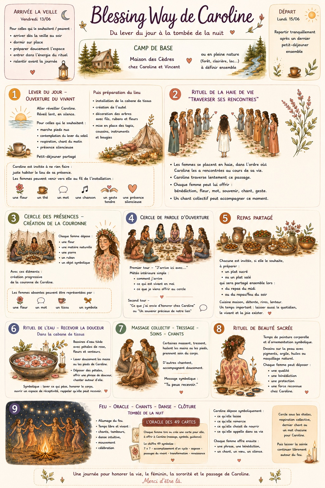

Chez Caro et Vincent uniquement.
Pas de pression. On fait simple. On fait avec ce qui est là. L’idée n’est pas de “réussir un rituel parfait”, mais de créer ensemble un espace beau, vivant, doux et habité pour Caroline.
🌿 Arrivée possible vendredi 13/06 au soir 🔥 Départ lundi matin 🌙 Oracle collectif de 49 cartes 🌹 Cabane de tissus & feu du soir
Chaque femme pourra se positionner sur une ou plusieurs petites contributions : arrivée/départ, matériel, plats, cartes oracle, chants, animation d’un temps du rituel… L’idée est de répartir simplement ce que chacune a envie d’apporter, sans que cela devienne une charge.
